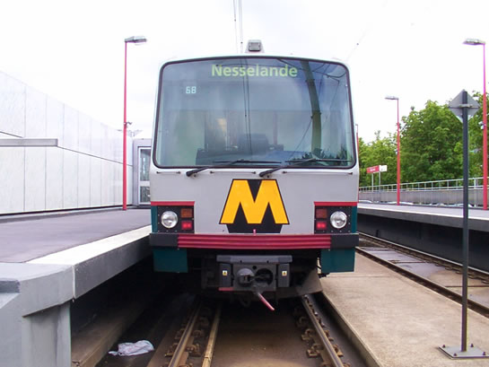
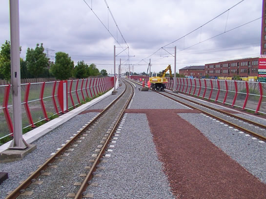
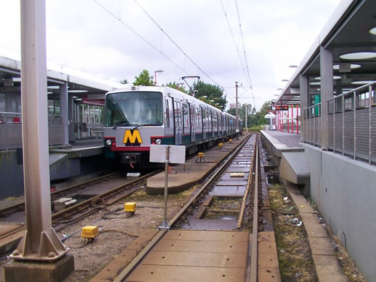
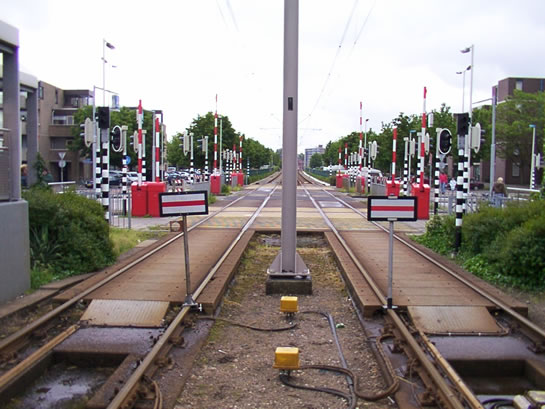
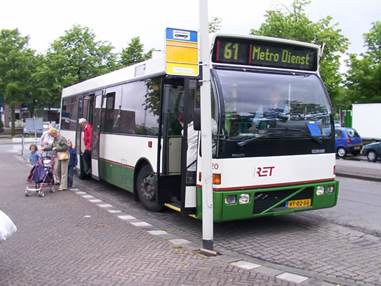
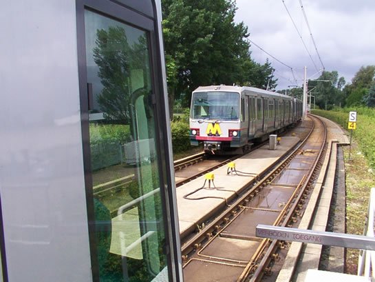
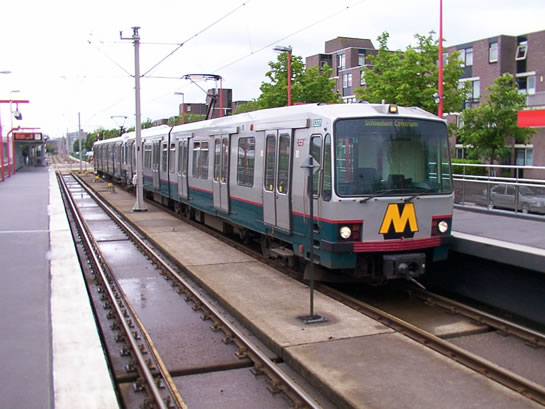
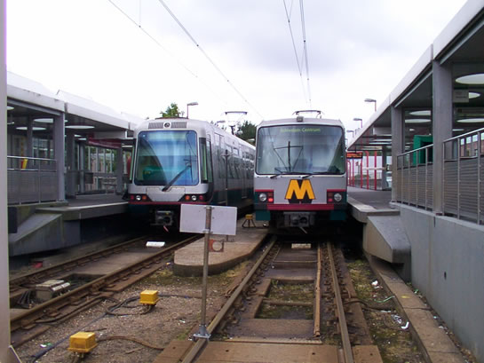

Aansluiting Nesselandelijn deel 1...
- maandag 08 december 2008 09:14
- Geschreven door Joachim
Vandaag deel 1 van de aansluiting van de Nesselandelijn. Sinds vanmorgen vroeg (01.00 uur) wordt er hard gewerkt om ervoor te zorgen dat maandagmorgen om 05.00 uur de aansluitingswerkzaamheden van de Nesselandelijn afgerond zijn. Ondanks het keerproces in station Nieuw Verlaat en de pendelbussen, is er van de daadwerkelijke werkzaamheden weinig te zien. Dit komt doordat het aanpassen en in bedrijf stellen van de spoorbeveiliging gebeurd in de relaisruimte nabij wisselcomplex De Tochten.

Een bestemming die bij het begin van de winterdienst gefilmd zal worden, wanneer alles volgens planning verloopt. Rijtuig 5247, station Nieuw Verlaat.
De derde rail is inmiddels ook aangebracht ter hoogte van waar vroeger het uitloopspoor 'Tochten Oost' lag. Met een speciaal railvoertuig wordt de derde rail aan de onderzijde glad geslepen, zodat de stroomafname bij het testbedrijf vlekkeloos zal verlopen. Ook is er een railshovel aanwezig om de laatste spoorwerkzaamheden te voltooien. Naast de bovenleiding die onlangs is opgehangen, zijn de bovenleidingportalen ook voorzien van een laklaag, in de kleur zoals we die gewend zijn (beige).

De derde rail is aangebracht, ook is er een railshovel ter plaatse. De derde rail wordt aan de onderzijde geslepen, om zo zonder problemen stroom af te nemen tijdens het begin van het testbedrijf.
Op station Nieuw Verlaat, Ambachtsland en De Tochten is RET-personeel aanwezig om passagiers door te verwijzen naar twee RET-bussen (620 en 670). Deze sluiten aan op de vertrek- en aankomsttijden van de metro's en doen de stations Nieuw Verlaat, Ambachtsland en De Tochten aan.

Tijdelijk eindpunt Nieuw Verlaat.

Verboden verder te rijden.

RET-bus 620. Samen met de 670 onderhouden deze bussen een pendeldienst tussen de stations Nieuw Verlaat, Ambachtsland en De Tochten.
Het keerproces in station Nieuw Verlaat verloopt naar omstandigheden redelijk. Af en toe weigert wisselcomplex Nieuw Verlaat, waardoor het binnennemen en vertrekken van metrotreinen in station Nieuw Verlaat langer kan duren. De AHOB-systemen Schout Bontebalpad en M.L. Kingweg functioneren ook zonder problemen.

Wanneer het spoor vrij is, kunnen er metrotreinen binnengenomen worden op station Nieuw Verlaat.

Rijtuig 5227, wachtend op een rijweg richting wisselcomplex Nieuw Verlaat.

Type T en Type B naast elkaar op tijdelijk eindpunt Nieuw Verlaat.